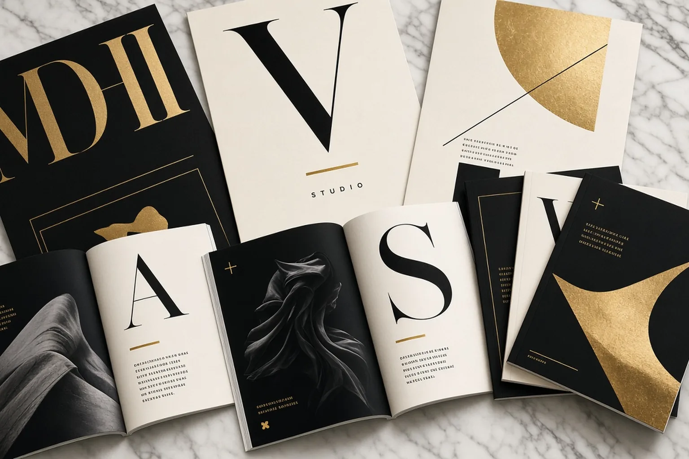
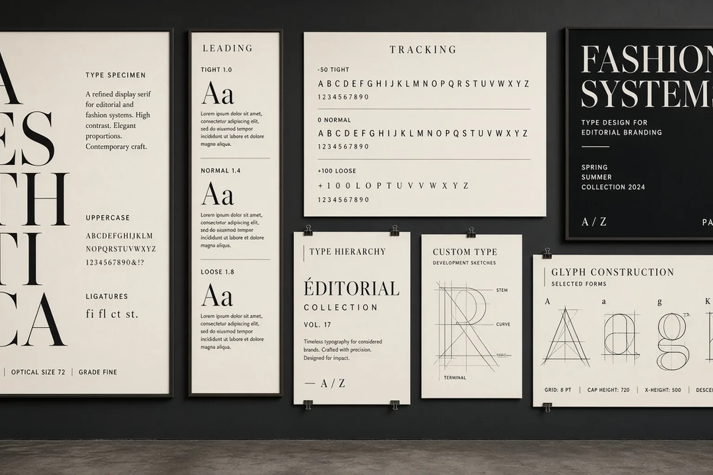
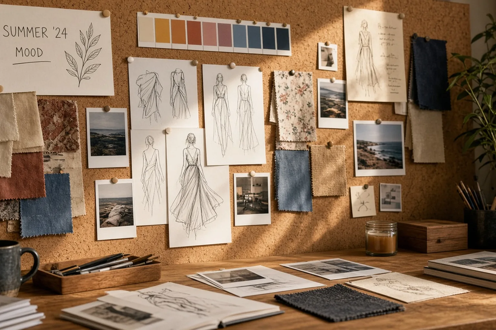

01
Creative Direction & Fashion
Campaign concepts, lookbooks, and art direction—fashionable stories that still feel professional and on-brand.
Los Angeles · Design Atelier
Christina Jaramillo
A fashionable design studio for brands that want polish with a pulse—creative direction, identity, books, fashion, UI, and campaign craft from Los Angeles.

Discipline with desire.
LoveThisLife is a boutique design atelier—not a factory. Every engagement gets senior creative direction, obsessive detail, and a look that feels current without chasing trends.
From fashion campaigns and luxury packaging to books, game UI, Figma products, social systems, and conference branding, the studio ships work that feels considered in the hand and magnetic on screen.




Services
Six disciplined lanes—scroll to reveal each. Depth lives in the craft list below.
Campaign concepts, lookbooks, and art direction—fashionable stories that still feel professional and on-brand.

Covers, interiors, typesetting, and magazines—layouts that honor reading and shelf presence.

Editorial, character, botanical, and spot illustration—handcrafted, finished for print and digital.

HUD systems, menus, icons, and visual assets that feel playable and on-world.

Product interfaces, design systems, and landing pages built for clarity and conversion.

Identity, retouching, social kits, print collateral, pitch decks—print and digital in one voice.
Capabilities
A senior toolkit—broad enough for a full campaign, precise enough for a single page.
Experience
Years of studio practice across fashion, publishing, product, and brand—rooted in Los Angeles.

Lead creative for identity, fashion campaigns, books, UI, illustration, and marketing systems. Partner with LA founders, publishers, boutiques, and associations who want one senior designer from brief to press.
Shipped covers, interiors, campaign kits, and packaging for lifestyle and fashion clients. Owned InDesign production, art direction with photographers, and multi-channel rollouts.
Designed web, landing, and product UI in Figma—plus game UI and icon systems for indie studios. Bridged visual craft with usable flows and clean handoff.
Built the craft base—typography, illustration, photo retouch, posters, and print production. Learned to make work that looks expensive because the details are honest.
Industries served from Los Angeles
Selected work
Detailed case notes across fashion, brand, books, games, UI, photo, social, and print—built to show range and finish.
Art-directed photography pacing, type, and paper choices for a seasonal lookbook. Tissue inserts, full-bleed spreads, and a quiet grid kept garments leading while the brand voice stayed refined and wearable.

Built a poster language with dramatic photography, bold display type, and modular crops for windows, transit, and social. One system scaled from gallery wall to Instagram without losing fashion heat.

Designed embossed cartons, bottle labels, and unboxing moments in champagne and charcoal. Spec’d foils, soft-touch coatings, and dielines so the shelf object felt as considered as the brand film.
Wordmark, monogram, and lockups with type, color, and stationery. Guidelines covered social avatars, packaging stamps, and partner co-branding so freelancers couldn’t dilute the look.

Jackets, spines, and full interiors—type hierarchy, chapter openers, and print specs. Coordinated paper, binding, and foil so shelf presence matched the manuscript tone across three titles.

Hand-drawn botanical and animal artwork finished for print, paced with the author and editor. Character consistency and generous margins kept the story readable for young readers.

HUD, menus, inventory, and icons in Figma and Illustrator—readable at small sizes with a cohesive fantasy look. Style guide let the studio extend assets without drift.

Designed product, cart, and editorial browsing flows with large photography and restrained UI chrome. Components and tokens in Figma kept engineering aligned with the brand’s soft luxury feel.

Professional skin, fabric, and color work for a fashion beauty set—natural finish, not plastic. Matched grade across hero, crop, and social so every channel felt like one shoot.

Built a compelling, highly professional kit for conference speakers and news announcements—LinkedIn carousels, Instagram posts/stories, and X graphics with one voice. Templates let the team publish weekly without redesigning from scratch.

Speaker spotlights, badges, program booklet, and stage backdrop for a professional association. Designed to grab attention while staying institutional—teal, cream, and clear hierarchy for large audiences.

Key cards, menus, signage language, and soft brass accents for a hospitality brand. Spatial graphics stayed quiet and tactile—designed to feel expensive without shouting.

Hero site moments, email headers, and social frames from one art direction. Kept fashion-forward imagery with clean CTAs so conversion didn’t fight the aesthetic.

Tri-fold brochure, flyer stack, poster, and pull-up banner under one system. Spec’d CMYK, bleeds, and vendor files so press day stayed calm and on-color.

Narrative, typography, charts, and a printed booklet for a seed raise. Designed for screen and handout so the story stayed sharp in the room and after.

Figma-first layout so covers and craft led, with quiet CTAs. Paired with retouching and social for launch week—print sensibility meeting digital clarity.
How the atelier works

Discover
Listen hard—audience, constraints, competitors, and taste. Surface what the brand must say, and what fashion or restraint it can wear.
Explore directions, then refine. Mood, type, image, and interaction lock before production so the concept survives the build.
High-fidelity layouts, artwork, UI, retouch, and production files. Specs and QA so print and digital match the intent.
Guidelines, templates, Figma libraries, and walkthroughs—so your team can extend the work without calling for every crop.
About the atelier
Founder · LoveThisLife Design Atelier · Los Angeles
I built LoveThisLife as a fashionable design studio with serious craft—creative direction for brands that want to look current, feel premium, and still read as professional.
Based in Los Angeles, I partner with fashion labels, publishers, hospitality, startups, game studios, and associations. One senior lead from mood board to press file—not a revolving door of juniors.